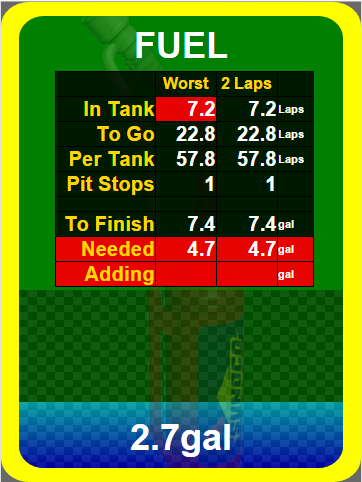

Angular directive
sra-fuel-tank source template
Clicking or Touching the blue area, will toggle between request full tank and none. Clicking above the blue, but within the checkered, adds the smallest amount needed to finish. Clicking in the green area will add fuel to the point where you clicked.
Several fuel mileage calculations are also shown, such as, the number of laps remaining base on fuel in the tank. Also, the number of laps per full tank, as well as alternate number of laps remaining based on a different number of laps to average.
By default, fuel mileage is calculated based on the worst lap that was not a out lap or caution lap, or a damaged lap. This is indicated by the number of laps to average of zero(0). Also by default, the alternate calculation is based on the last 2 laps averaged. Useful if saving fuel, you can see how far you can go if you continue to save at the same rate. Both of these can be changed using the parameters below.
If the fuel calculations have a red background on any of them, then that means you need to pit and you cannot add enough to finish. If the fuel calculations have a yellow background, then that still means you need to pit, but you can add enough fuel to finish. If the fuel calculations all have a green background, then you are good to go to the end of the race on fuel that's in the tank.
If the SIM supports it, this widget can send commands to the SIM to tell it what fuel level you want added on the next pit stop. By default, it does not send the commands.
Example:
<sra-fuel-tank data-sra-args-laps-to-average=0 data-sra-args-alt-laps-to-average=2></sra-fuel-tank>

Dependencies:
| Name | Type | Description |
|---|---|---|
| data-sra-args-laps-to-average | integer | The number of laps to average all fuel calculations. Defaults to zero(0). |
| data-sra-args-alt-laps-to-average | integer | The number of laps to average for the alternate fuel calculations. Default zero(2). |
| data-sra-args-show-alt-laps-to-average | boolean | Hides the the Alternate Laps column. Default (false). |
| data-sra-args-s-i-m-controller | boolean | If true, then this widget can send changes to the SIM. Defaults to false. |
| data-sra-args-show-table | boolean | If true, then the table of values will be shown. Default (true). |
| data-sra-args-show-to-go-laps | boolean | If true, then the Laps To Go value will be shown. Default (true). |
| data-sra-args-show-in-tank-laps | boolean | If true, then the Laps remaining in the tank will be shown. Default (true). |
| data-sra-args-show-per-tank-laps | boolean | If true, then the number of laps for a full tank will be shown. Default (true). |
| data-sra-args-show-to-finish | boolean | If true, then the amount of fuel needed to finish is shown. Default (true). |
| data-sra-args-show-in-tank | boolean | If true, then the amount of fuel in the tank is shown. Default (true). |
| data-sra-args-show-needed | boolean | If true, then the amount of fuel you need to add to be able to finish is shown. Default (true). |
| data-sra-args-show-adding | boolean | If true, then the actual amount of fuel you can add based on what you have asked the SIM to add will be shown. Default (true). |
| data-sra-args-show-pit-stops | boolean | If true, then the number of stops to finish is shown. Default (true). |
| data-sra-args-interval | integer | The interval, in milliseconds, that this widget will update from the server. Default is 100. |